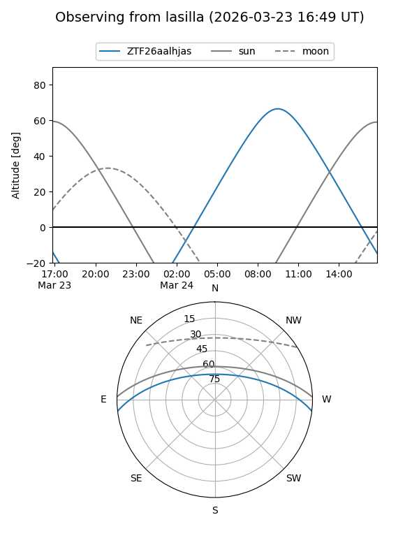
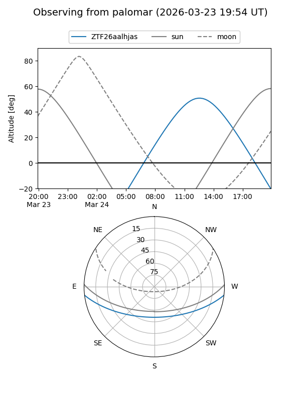

ZTF26aalhjas
Target ZTF26aalhjas at 2026-03-24 14:10
Aliases and brokers:
FINK: link
Lasair: link
ALeRCE: link
alt names
ZTF26aalhjas (ztf,fink_ztf)
Coordinates:
equatorial (ra, dec) = 252.9757,-5.78846
equatorial (HMS+DMS) = 16:51:54.16,-05:47:18.45
galactic (l, b) = (12.8249,+23.27724)
Flags:
Photometry:
last ztfg=15.24
1 ztfg detections
Lightcurve
Visibility


Additional plots